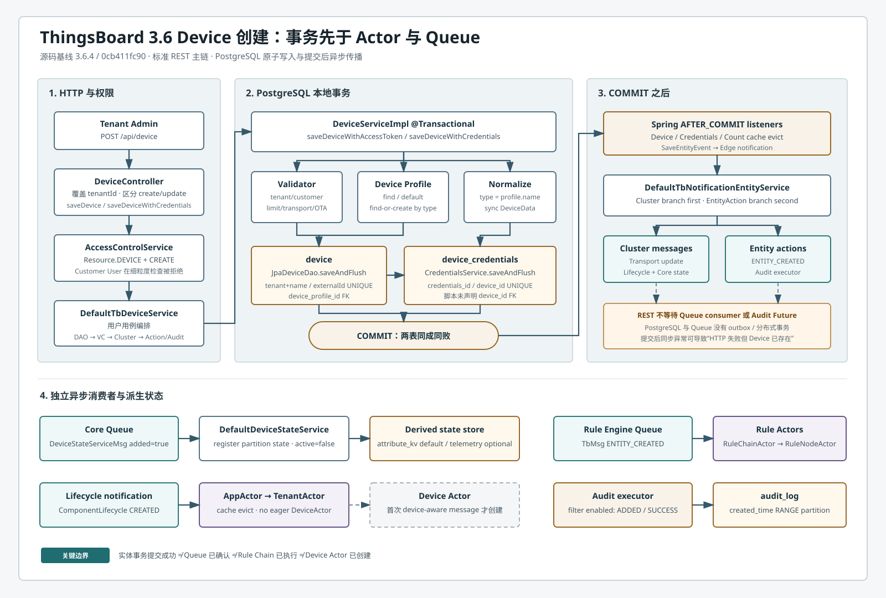

CHAPTER 02 · SOURCE VERIFIED
Device 创建流程
本章完整追踪 POST /api/device 与 POST /api/device-with-credentials，并把 Provision、Gateway、LwM2M、Rule Engine、Edge 和导入入口作为独立分支标明。
device 与 device_credentials 在 DAO Service 的同一 PostgreSQL 事务提交。Cluster、Rule Engine、Device State 和 Audit 都发生在提交之后；Device CREATED 生命周期不会主动创建 Device Actor。一、流程目标
创建流程把用户提交的 Device DTO 变成具备租户/Profile 归属、可认证凭据、集群可见性和初始在线状态的设备。实体写入先闭合本地事务，再异步传播派生状态。
| 成功点 | 保证 | 不保证 |
|---|---|---|
saveAndFlush() | SQL 已发送，约束可检查 | 外层事务已提交 |
| DAO 事务方法返回 | Device 与 Credentials 已提交 | Queue/Audit 已完成 |
| HTTP 200 | 同步编排正常返回 | Consumer、Rule Chain、State 已完成 |
| 异步消费完成 | 对应派生动作完成 | 与 Device INSERT 具有共同事务 |
二、入口
| 入口 | 方法 | 说明 |
|---|---|---|
POST /api/device | org.thingsboard.server.controller.DeviceController.saveDevice(Device, String) | 标准创建；默认 ACCESS_TOKEN，可指定 token |
POST /api/device-with-credentials | DeviceController.saveDeviceWithCredentials(SaveDeviceWithCredentialsRequest) | ACCESS_TOKEN、X509、MQTT_BASIC、LwM2M |
POST /api/lwm2m/device-credentials | org.thingsboard.server.controller.Lwm2mController.saveDeviceWithCredentials(Map) | 已废弃兼容接口；解包后委托 DeviceController |
| CSV bulk import | DeviceController.processDevicesBulkImport(BulkImportRequest) | 每行进入 TbDeviceService 显式凭据路径 |
| Provision | org.thingsboard.server.service.device.DeviceProvisionServiceImpl.processCreateDevice(...) | MQTT/CoAP/HTTP 设备自动注册分支 |
| Gateway | org.thingsboard.server.service.transport.DefaultTransportApiService.handle(GetOrCreateDeviceFromGatewayRequestMsg) | 创建子设备并额外保存 Created 关系 |
| Rule Engine / Edge / Import | TbAbstractRelationActionNode / BaseDeviceProcessor / DeviceImportService | 复用 DAO Service，但通知语义不同 |
@PreAuthorize 允许 CUSTOMER_USER 进入方法不代表可创建。细粒度 Operation.CREATE 检查使用 CustomerUserPermissions，其 Device checker 不包含 CREATE，最终返回拒绝。
flowchart TD
U[HTTP user] --> P{PreAuthorize}
P -->|TENANT_ADMIN or CUSTOMER_USER| C[DeviceController]
P -->|other| X1[403]
C --> T[tenantId = current user tenant]
T --> A[checkEntity null, Device, CREATE]
A --> R{Authority permission strategy}
R -->|Tenant Admin same tenant| S[DefaultTbDeviceService]
R -->|Customer User| X2[CREATE denied]
三、完整调用链
3.1 REST 到事务边界
| 步骤 | 类与方法 | 职责 |
|---|---|---|
| 1 | org.thingsboard.server.controller.DeviceController.saveDevice(Device, String) | 覆盖 tenantId，创建时执行 CREATE 权限 |
| 2 | org.thingsboard.server.service.entitiy.device.DefaultTbDeviceService.save(Device, Device, String, User) | 应用用例编排，不是核心 DB 事务 |
| 3 | org.thingsboard.server.dao.device.DeviceServiceImpl.saveDeviceWithAccessToken(Device, String) | @Transactional 包住 Device 与 Credentials |
| 4 | DeviceServiceImpl.saveDeviceWithoutCredentials(Device, boolean) | validate、Profile、normalize、flush、events |
| 5 | org.thingsboard.server.dao.service.validator.DeviceDataValidator.validateDataImpl(TenantId, Device) | tenant/customer/transport/OTA 一致性 |
| 6 | org.thingsboard.server.dao.device.DeviceProfileServiceImpl.findOrCreateDeviceProfile(TenantId, String) | 兼容 legacy type；唯一冲突后尝试重查，但不保证外层事务可恢复 |
| 7 | org.thingsboard.server.dao.sql.device.JpaDeviceDao.saveAndFlush(TenantId, Device) | 生成 time-based UUID 并 INSERT device |
| 8 | org.thingsboard.server.dao.device.DeviceCredentialsServiceImpl.saveOrUpdate(TenantId, DeviceCredentials) | 凭据格式化、校验、INSERT、cache event |
| 9 | org.thingsboard.server.dao.sql.device.JpaDeviceCredentialsDao.saveAndFlush(...) | 提前暴露 credentials/device 唯一冲突 |
3.2 提交后分叉
| 分支 | 方法 | 输出 |
|---|---|---|
| 事务事件 | AbstractCachedEntityService.publishEvictEvent(E) | AFTER_COMMIT 清 Device/Credentials/Count cache |
| Edge | EdgeEventSourcingListener.handleEvent(SaveEntityEvent<?>) | ADDED Edge notification |
| Cluster | DefaultTbClusterService.onDeviceUpdated(Device, Device) | Transport update、CREATED lifecycle、Core state、OTA |
| Rule Engine | EntityActionService.pushEntityActionToRuleEngine(...) | TbMsgType.ENTITY_CREATED |
| Audit | AuditLogServiceImpl.logAction(...) | AuditLogLevelFilter 允许时由 executor 异步写 audit_log |
| State | DefaultDeviceStateService.onQueueMsg(DeviceStateServiceMsgProto, TbCallback) | 注册 Core partition state，保存 active=false |
逐步输入、输出、源码行号和设计原因见完整 Markdown 调用链。
四、消息流
flowchart LR
UI[Tenant Admin] --> DC[DeviceController]
DC --> ACL[AccessControlService]
ACL --> APP[DefaultTbDeviceService]
APP --> DS[DeviceServiceImpl transaction]
DS --> V[DeviceDataValidator]
DS --> DP[DeviceProfileService]
DS --> JD[JpaDeviceDao]
JD --> D[(device)]
DS --> CS[CredentialsService]
CS --> C[(device_credentials)]
D --> COMMIT{COMMIT}
C --> COMMIT
COMMIT --> CACHE[After-commit cache/Edge events]
COMMIT --> N[NotificationEntityService]
N --> TQ[Transport notifications]
N --> LQ[Lifecycle notifications]
N --> CQ[Core state queue]
N --> RQ[Rule Engine ENTITY_CREATED]
N --> A[(audit_log async)]
flowchart TD
DB[(Committed Device)] --> L[Lifecycle CREATED]
DB --> S[DeviceState added=true]
DB --> E[ENTITY_CREATED]
L --> AC[AbstractConsumerService cache evict]
AC --> AA[AppActor - TenantActor]
AA --> NO[No eager DeviceActor]
S --> DSS[DefaultDeviceStateService]
DSS --> ST[(attribute_kv active=false default)]
E --> RA[RuleChainActor - RuleNodeActor]

五、时序图
打开 PlantUML 源文件，或查看经 PlantUML CLI 验证生成的时序图 SVG。图中包含权限拒绝、Profile 分支、flush/rollback/commit、AFTER_COMMIT、五条异步通知和 Device Actor 惰性生命周期。
{kind=link}
六、数据变化
| 对象 | 变化 | 边界 |
|---|---|---|
device | 新 UUID、tenant/customer/profile、name/type/device_data 等 | 核心事务 |
device_credentials | 一条 ACCESS_TOKEN/X509/MQTT_BASIC/LwM2M 凭据 | 与 Device 同一事务 |
device_profile | 只有 legacy type 不存在时自动创建 | 加入外层事务 |
| Device/Credentials/Count cache | 事务提交后 evict | Spring transaction event |
| Device Profile cache | lifecycle consumer 按 deviceId evict | Queue 异步 |
| Device State | 内存注册；默认写 SERVER_SCOPE active=false | Core Queue 异步 |
| Rule Engine | Device JSON + user/customer metadata 的 ENTITY_CREATED | Rule Queue 异步 |
audit_log | AuditLogLevelFilter 允许时记录 ADDED/SUCCESS；失败链记录 FAILURE | executor 异步 |
| Session / Device Actor | 不创建 Session；不预建 Device Actor | 无变化 |
stateDiagram-v2
[*] --> RequestDTO
RequestDTO --> Validated
Validated --> ProfileBound
ProfileBound --> DeviceFlushed
DeviceFlushed --> CredentialsFlushed
CredentialsFlushed --> Committed
Committed --> ClusterVisible
Committed --> Audited
ClusterVisible --> StateRegistered
ClusterVisible --> RuleEngineVisible
ClusterVisible --> ActorStillLazy
ActorStillLazy --> DeviceActorActive: first device-aware message
七、源码分析
7.1 分层与继承
classDiagram
BaseController <|-- DeviceController
AbstractTbEntityService <|-- DefaultTbDeviceService
TbDeviceService <|.. DefaultTbDeviceService
AbstractCachedEntityService <|-- DeviceServiceImpl
DeviceService <|.. DeviceServiceImpl
JpaAbstractDao <|-- JpaDeviceDao
DeviceDao <|.. JpaDeviceDao
JpaRepository <|-- DeviceRepository
DeviceController --> TbDeviceService
DefaultTbDeviceService --> DeviceService
DeviceServiceImpl --> DeviceCredentialsService
DeviceServiceImpl --> DeviceProfileService
DefaultTbDeviceService 知道 User、ActionType、VC、通知和审计；DeviceServiceImpl 知道事务、Validator、Profile、Credentials、Cache 和数据库。Provision、Gateway、Edge、Rule Node 可以复用后者并保持自己的确认语义。
7.2 关键实现族
| 职责 | 接口 | 实现 |
|---|---|---|
| 应用用例 | org.thingsboard.server.service.entitiy.device.TbDeviceService | DefaultTbDeviceService |
| 领域持久化 | org.thingsboard.server.dao.device.DeviceService | DeviceServiceImpl |
| Device DAO | org.thingsboard.server.dao.device.DeviceDao | JpaDeviceDao |
| Credentials | DeviceCredentialsService / DeviceCredentialsDao | DeviceCredentialsServiceImpl / JpaDeviceCredentialsDao |
| ORM | JpaRepository | DeviceRepository / DeviceCredentialsRepository |
| 缓存 | TbTransactionalCache | Device/credentials 的 Caffeine 或 Redis 实现 |
| 集群 | org.thingsboard.server.cluster.TbClusterService | DefaultTbClusterService |
| 审计 | AuditLogService | AuditLogServiceImpl |
八、Actor 分析
数据库主事务不经过 Actor。CREATED lifecycle 经 notification consumer 到 AppActor.onComponentLifecycleMsg(...) 和 TenantActor.onComponentLifecycleMsg(...)；TenantActor 对 CREATED 只查询已有 actor ref，不调用 getOrCreateDeviceActor(...)。
flowchart TD
C[DEVICE CREATED lifecycle] --> A[AppActor]
A --> T[TenantActor]
T --> R{existing Device actor?}
R -->|yes| D[deliver lifecycle]
R -->|no| N[debug and stop]
N --> L[Device Actor remains lazy]
M[later session/RPC/device-aware msg] --> G[getOrCreateDeviceActor]
G --> DA[DeviceActor starts]
ENTITY_CREATED 虽以 Device 为 originator，却进入 RuleChainActor/RuleNodeActor，不进入 Device Actor。
九、Kafka 分析
Kafka 不是必需项，queue.type 默认是 in-memory。配置 Kafka 时，创建后的逻辑消息映射如下：
| 消息 | Topic | 典型 Consumer Group |
|---|---|---|
| Device State | tb_core，默认 10 partitions | monolith-core-consumer / tb-core-node |
| ENTITY_CREATED | Profile queue；默认 Main 常为 tb_rule_engine.main | re-<queueName>-consumer |
| Lifecycle | tb_rule_engine.notifications.<serviceId> | 每 Rule Engine service 实例独立 group |
| Transport update | tb_transport.notifications.<serviceId> | transport-node-<serviceId> |
这些 send 均传 null callback，HTTP 不等待 broker ACK 或 consumer commit。PostgreSQL 与 Kafka 之间没有 transactional outbox；崩溃可造成 Device 已提交但通知缺失，消费重试也可能导致业务副作用重复。
十、数据库分析
erDiagram
DEVICE_PROFILE ||--o{ DEVICE : physical_FK
DEVICE ||--|| DEVICE_CREDENTIALS : unique_logical_link
DEVICE ||--o{ AUDIT_LOG : logical_entity_id
DEVICE ||--o{ ATTRIBUTE_KV : logical_entity_id
DEVICE {
uuid id PK
bigint created_time
uuid tenant_id
uuid customer_id
uuid device_profile_id FK
varchar name UK_scope_tenant
varchar type
jsonb device_data
uuid external_id UK_scope_tenant
}
DEVICE_CREDENTIALS {
uuid id PK
uuid device_id UK
varchar credentials_id UK
varchar credentials_type
varchar credentials_value
}
实体与凭据始终写 PostgreSQL。device_credentials.device_id 在 3.6.4 建表脚本中只有 UNIQUE、没有 FK，不能把逻辑一对一画成物理外键。device.device_profile_id、firmware 和 software 才有真实 FK。audit_log 只在 AuditLogLevelFilter 允许该实体/动作时异步写入。
默认 state.persistToTelemetry=false 时，稍后的 Core consumer 写 attribute_kv(active=false)；为 true 时才通过所选 timeseries backend 写 SQL/TimescaleDB/Cassandra。Redis 只在选择 Redis cache 时保存缓存副本，不是权威实体库。
十一、异常处理
| 失败位置 | 结果 | 事务状态 |
|---|---|---|
| 权限/Validator | 拒绝或 validation error | 无提交 |
| Device name/externalId 冲突 | 转换为可读 DataValidationException | 回滚 |
| Credentials ID/device ID 冲突 | Specified credentials are already registered! | Device 与 Credentials 一起回滚 |
| Commit 失败 | AFTER_COMMIT listener 不执行，catch 防御性 evict | 回滚 |
| 提交后 autoCommit/Cluster 同步异常 | HTTP 可能报错 | Device 已存在 |
| Queue/Audit/State 异步失败 | HTTP 不感知，派生状态缺失或重试 | Device 保留 |
十二、源码阅读路线
DeviceController.saveDevice(...)：看 tenantId 覆盖和 create 分支。BaseController.checkEntity(...)、CustomerUserPermissions：看两层授权。DefaultTbDeviceService.save(...)：先标出事务之后的动作。DeviceServiceImpl.saveDeviceWithAccessToken(...)、doSaveDevice(...)、saveDeviceWithoutCredentials(...)：建立事务主线。DeviceDataValidator、DeviceProfileServiceImpl、syncDeviceData(...)：看输入规范化。JpaAbstractDao、两个 Entity、两个 Repository、schema-entities.sql：对齐 DTO/JPA/SQL。AbstractCachedEntityService与 transaction listeners：确认 commit 后 evict。DefaultTbClusterService.onDeviceUpdated(...)：拆开四条通知。EntityActionService与AuditLogServiceImpl：看 Rule Engine 和异步审计。AbstractConsumerService、AppActor、TenantActor、DefaultDeviceStateService：验证 Actor 与 state 的后续行为。
十三、常见面试题
Device 与 Credentials 是否同一事务？
是。两个创建入口最终都进入 DeviceServiceImpl 的 @Transactional 方法；凭据冲突会回滚 Device。
saveAndFlush() 是否等于 commit？
不等于。flush 发送 SQL 并检查约束；外层事务仍可回滚。
为什么 Customer User 通过注解仍不能创建？
方法级注解只是入口过滤；Resource/Operation 的 PermissionChecker 不允许 Customer User 执行 Device CREATE。
创建会预建 Device Actor 吗？
不会。CREATED lifecycle 只投递给已有 actor；后续 device-aware message 才调用 getOrCreateDeviceActor(...)。
HTTP 失败是否一定没创建？
不一定。DAO commit 后的同步编排异常仍可被外层 catch 返回；此时 Device 已存在。
Kafka 是必需的吗？
不是。Queue SPI 默认 in-memory；Kafka 是可选物理实现。
创建会写 TimescaleDB/Cassandra 吗？
实体事务不会。只有启用 state telemetry 后，异步 active=false 才可能进入所选时序后端。
为什么同时发 lifecycle 和 ENTITY_CREATED？
前者服务运行时 cache/Actor 传播，后者是进入用户 Rule Chain 的业务消息，消费者与失败语义不同。
为什么凭据查询缓存 null？
阻止无效 token 的高频尝试持续打数据库；因此新凭据提交后必须 evict 对应 key。